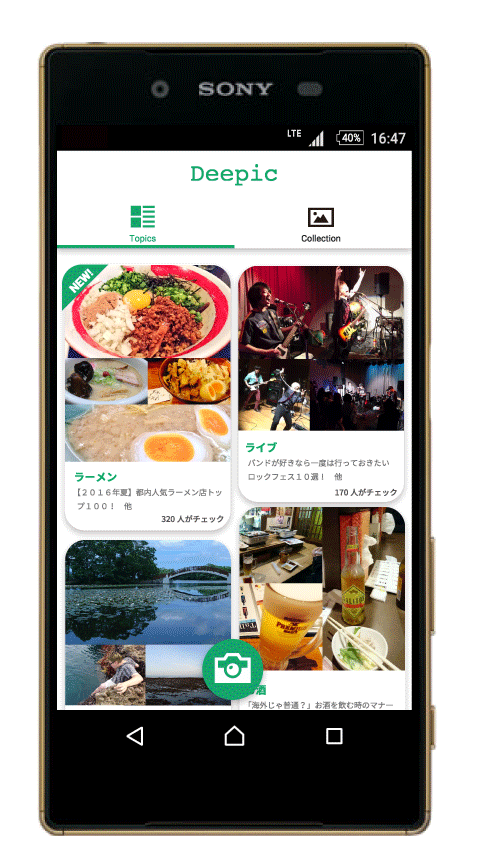
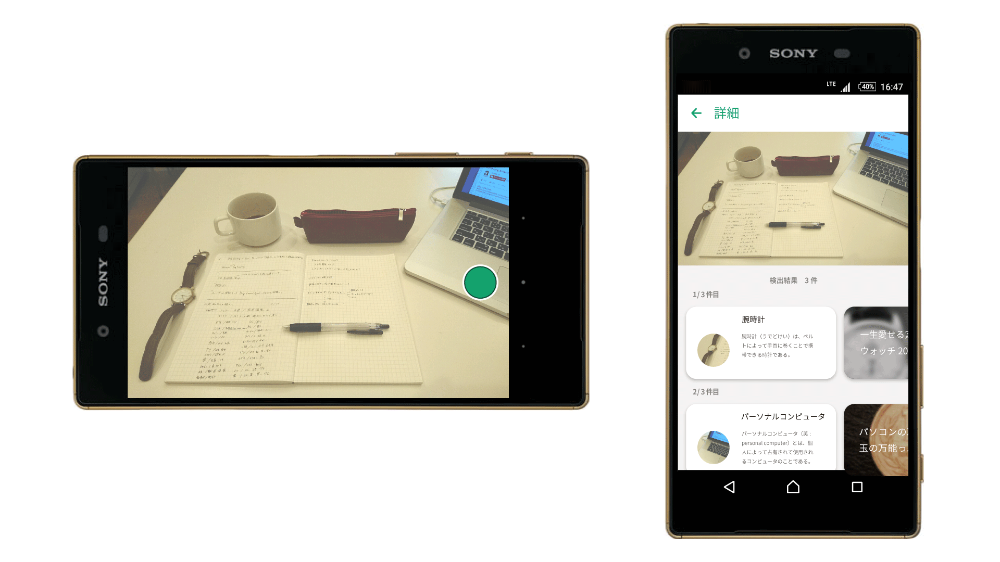

1.作品紹介
旅行の記念や食事、メモなどたくさんのシーンで使うことがあるカメラアプリ。
深層学習を取り入れたDeepicは、質の高い記憶の再生を可能にした。
2.詳細
撮影した写真は高精度の画像認識によって、写り込んだオブジェクトを検知。
また、それらに関わる様々な情報を、キュレーションサイトなどから引用して表示する。
日常、旅行先、メモ、様々なシーンでこの機能を活用することができる。
写真を見返す時に付加情報があるため、より高質に思い出すことができるだけではなく、
会議やノートのメモであれば、次に活かすことができる有益な情報も得ることが可能だ。
撮影を繰り返していくと、情報と紐づいたフォトアルバムが出来上がる。
これまでのように情報が整理され、並んでいるだけのものではなく、
写真に関連する記事がついた読み物"マガジン風フォトビューアー"として活躍する。
また、「金曜日の昼はいつもラーメンを撮影している」という風に学習すると、
Deepicは金曜日のお昼時になると最寄のラーメン屋さんをピックアップしてくれるようになる。
過去を記録していただけの写真が、未来の行動を提案してくれるようになるのだ。
3.制作情報
-
使用ソフト

-
規模
インターンシップ個人制作
-
期間
2016年8月 3週間